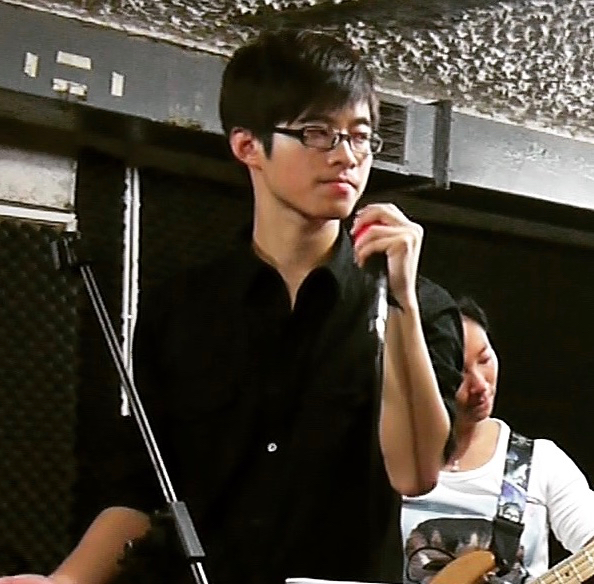

|  |
| Name: | Yifan Jiang |
| Instrument Skills: | Piano(since 8), Guitar(since 22) |
| Favorite Music Style: | R&B, Classic, Rock, Pop, Funk |
| Experience: | Lock Band(vocalist & guitarist) |
| Prize: | Piano 10 levels, Keyboard 8 levels |
| Original Works: | FeatherLucky, To Mom |
| Interests: | Singing, Playing solo piano and rhythm guitar |
About this website:
This website is my personal music blog which include all my favorite guitar and piano tablature most of which come from other website, not my original works. On the up left corner, I will note the source of these tablature. Of course, if I have my original works, I will also update it to my original catagory. Hope anyone who visit my website will enjoy it!
Copyright © 2016 Yifan Jiang
Built with Bootstrap, Font Awesome and more.